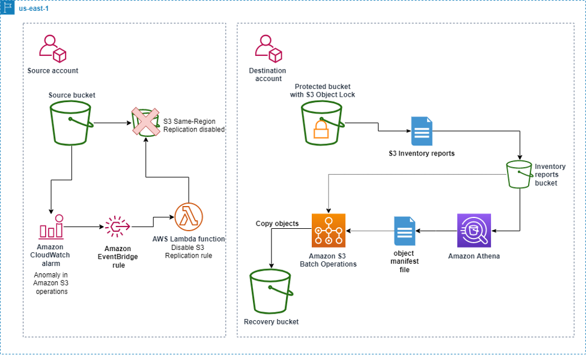
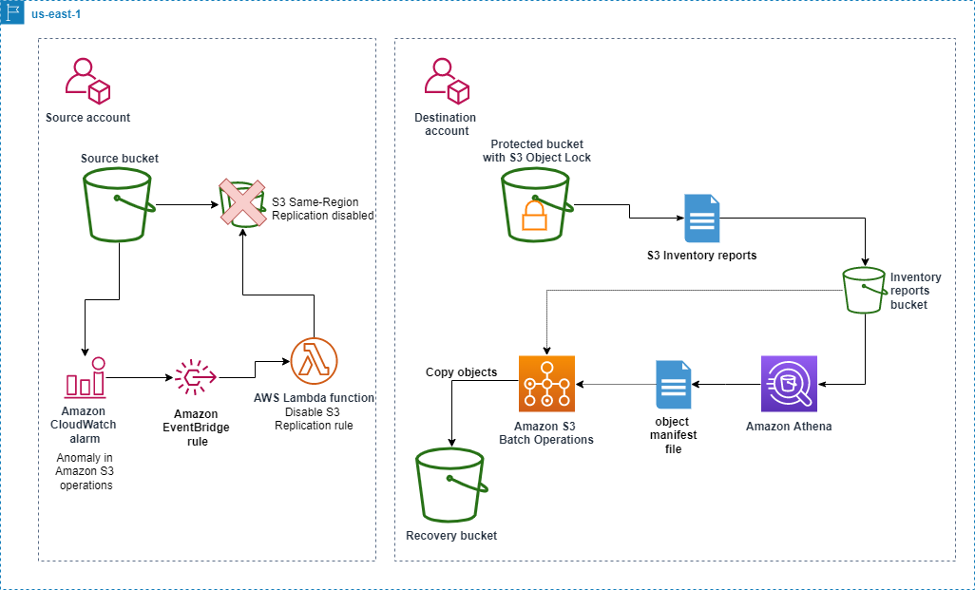
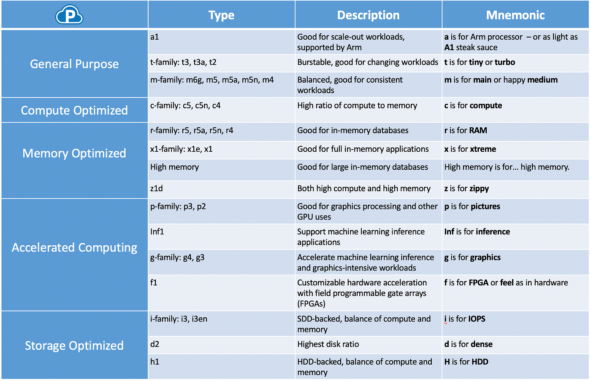
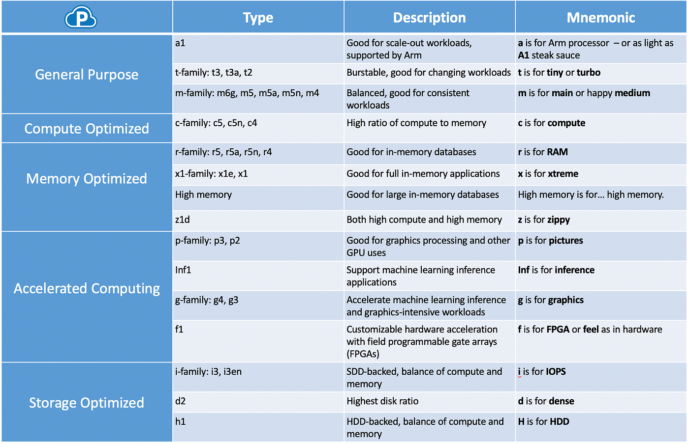
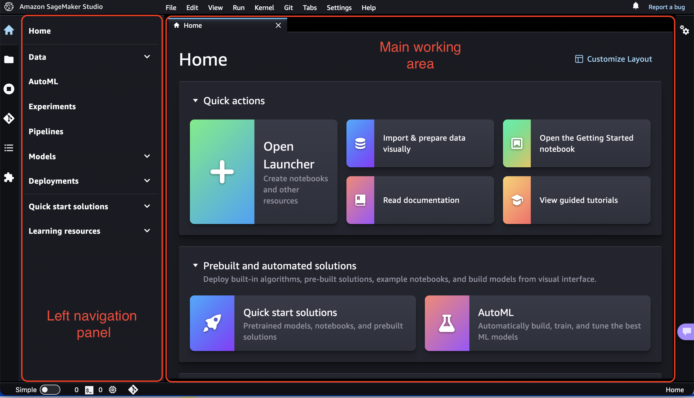
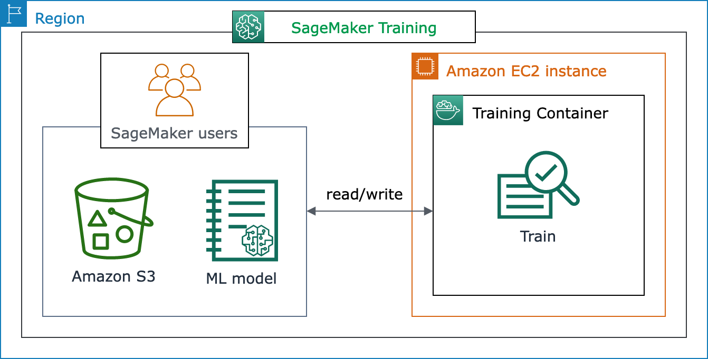

Amazon Web Service
Welcome to Cloud for Data Scinece/Analytics/Engineering¶
Amazon Web Services (AWS) for Data Science
1️⃣ What is AWS?
Definition
Amazon Web Services (AWS) is a cloud computing platform by Amazon that provides scalable infrastructure and services over the internet.
Instead of buying physical servers, you can: Rent virtual machines Store data Deploy applications Build ML models All on-demand.
2️⃣ Why AWS for Data Science?
Traditional Setup Problem :
Buy servers
Configure networking
Maintain hardware
Scale manually
High upfront cost
AWS Solution
No hardware Instant server creation
Auto scaling
Pay only for usage
Managed ML services
3️⃣ Core AWS Concepts
☁️ 3.1 Cloud Computing¶
Definition:
Delivering computing services over the internet.
Types:
IaaS – Infrastructure as a Service (EC2)
PaaS – Platform as a Service (Elastic Beanstalk)
SaaS – Software as a Service (Gmail, Zoom)
🌍 3.2 Regions & Availability Zones
A Region is a geographic area where AWS has data centers.
Example: Mumbai (ap-south-1), US-East (Virginia).
Each Region contains multiple Availability Zones (AZs).
Why this matters:
If one data center fails → other AZ works.
Used for high availability.
Critical for production systems.
4️⃣ AWS Storage Services
4.1 Amazon S3 (Simple Storage Service)

 

Definition:
Object storage service used to store files.
Key Concepts:
Bucket → Folder
Object → File
Unlimited storage
Highly durable (99.999999999%)
Use Cases:
Store CSV datasets
Store ML models
Store backups
Host static websites
💾 4.2 EBS (Elastic Block Store)
Definition:
Block storage attached to EC2.
Works like Hard Disk
Used for OS, database storage
Persistent storage
🧊 4.3 Glacier
Definition:
Low-cost storage for archives. Cheap Slow retrieval Used for backups
5️⃣ AWS Compute Services
🖥 5.1 EC2 (Elastic Compute Cloud)
 

Definition:
EC2 instances come in different types:
General Purpose → t2, t3 (small apps, freelancing)
Compute Optimized → c5 (ML training)
Memory Optimized → r5 (big datasets)
GPU → p3, g4 (Deep learning)
You choose instance type based on:
RAM requirement
CPU cores
GPU need
Budget
You can:
Install Python
Install MySQL
Run ML models
Host applications
Key Components:
AMI (Amazon Machine Image) → OS template
Instance Type → CPU/RAM configuration
Key Pair → SSH access
Security Group → Firewall
EC2 for Data Science:
Create Ubuntu server
Install Anaconda
Connect via SSH
Run Jupyter Notebook
⚡ 5.2 AWS Lambda
Definition:
Serverless compute service.
No server management
Event-driven
Pay per execution
Used for:
Triggering pipeline jobs
Automating workflows
6️⃣ Networking Basics¶
🌐 6.1 VPC (Virtual Private Cloud)
Definition:
Create public servers (accessible from internet)
Create private servers (internal only)
Control IP ranges
Secure databases
Example:
EC2 in public subnet
RDS in private subnet
You control:
IP ranges
Subnets
Routing
Security
🔐 Security Group
Acts as:
Firewall for EC2
Controls:
Inbound traffic
Outbound traffic
Example:
Allow port 22 for SSH
Allow port 8888 for Jupyter
7️⃣ AWS CLI
Definition:
Command Line Interface to control AWS from terminal.
Example:
aws s3 ls
aws ec2 describe-instances
Used for:
Automation
DevOps
CI/CD
8️⃣ Application Deployment in AWS
Deployment Methods:
1️⃣ Manual EC2 Deployment
Launch EC2
Install software
Upload code
Run app
2️⃣ Elastic Beanstalk
Upload code
AWS manages infrastructure
3️⃣ Docker + EC2
Container-based deployment
9️⃣ AWS SageMaker (For Machine Learning)¶



Definition:
SageMaker is a fully managed ML platform.
It removes the need to:
Launch EC2 manually
Configure GPUs
Install ML libraries
It provides:
Notebook environment
Built-in algorithms
Distributed training
One-click deployment
Model monitoring
You can:
Build models
Train models
Deploy models
Monitor models
SageMaker Workflow
Upload data to S3
Create Notebook instance
Train model
Deploy endpoint
Use API for predictions
Why SageMaker?
No server setup
Auto scaling
Built-in algorithms
Production ready
🔟 IAM (Identity and Access Management)¶
Definition:
IAM controls access inside AWS.
Components:
User → Person
Role → Permission set assigned to service
Policy → JSON document defining allowed actions
Example:
Give EC2 permission to read S3
Restrict intern from deleting resources
You can:
Create users, Assign roles, Attach policies
Important for:
Security
Controlled access
1️⃣1️⃣ Databases in AWS¶
RDS (Relational Database Service)
Definition:
Managed SQL database.
Supports:
MySQL
PostgreSQL
MariaDB
No need to manage:
Backups
Scaling
Patching
1️⃣2️⃣ Data Science Architecture (Beginner Level)¶
Example Workflow:
Store raw data → S3
Launch EC2
Connect to S3
Train model
Save model in S3
Deploy via EC2 or SageMaker
1️⃣3️⃣ Pay-As-You-Go Model
AWS charges based on:
Compute hours
Storage used
Data transfer
API calls
No upfront cost.
1️⃣4️⃣ When to Use What?
Requirement Service
Store datasets S3
Run Python code EC2
Serverless automation Lambda
Train ML models easily SageMaker
SQL database RDS
Archive data Glacier
1️⃣5️⃣ Advantages of AWS¶
Scalable
Reliable
Secure
Global infrastructure
Large ecosystem
Free Tier available
🚀 Final Summary¶
AWS provides:
Storage (S3)
Compute (EC2, Lambda)
ML Platform (SageMaker)
Databases (RDS)
Networking (VPC)
Security (IAM)
It allows data scientists to:
✅ AWS Products with Normal Equivalent¶
This is what you asked clearly 👍
AWS Products and Their Normal Equivalent¶
| AWS Product | Category | What It Is | Normal Equivalent (Traditional Setup) |
|---|---|---|---|
| EC2 | Compute | Virtual machine in cloud | Physical server / Your laptop |
| S3 | Object Storage | Stores files (objects) | Google Drive / External storage |
| EBS | Block Storage | Hard disk attached to EC2 | Internal HDD / SSD |
| RDS | Relational Database | Managed SQL database | MySQL installed on server |
| DynamoDB | NoSQL Database | Managed NoSQL database | MongoDB |
| Redshift | Data Warehouse | Analytical database for BI & reporting | Snowflake / On-prem Data Warehouse |
| Athena | Query Engine | Query S3 using SQL | Presto / Querying CSV locally |
| Glue | ETL Service | Data pipeline & transformation service | Talend / Manual Python ETL scripts |
| SageMaker | ML Platform | Build, train & deploy ML models | Jupyter + Flask + Manual deployment |
| Lambda | Serverless Compute | Run code without managing servers | Cron job / Background script |
| Elastic Beanstalk | PaaS | Easy application deployment | Heroku |
| VPC | Networking | Private network inside AWS | Office LAN network |
Database vs Data Warehouse vs Data Lake¶
| Feature | Database (OLTP) | Data Warehouse (OLAP) | Data Lake |
|---|---|---|---|
| Main Purpose | Daily transactions | Business analytics | Store raw data |
| Data Type | Structured | Structured | Structured + Unstructured |
| Example AWS | RDS / DynamoDB | Redshift | S3 |
| Query Type | Simple queries | Complex analytical queries | Process after storing |
| Schema | Schema-on-write | Schema-on-write | Schema-on-read |
| Data Volume | Medium | Large | Very Large |
| Users | Application systems | Analysts / BI tools | Data Engineers / Scientists |
| Cost | Moderate | Higher | Cheapest storage |